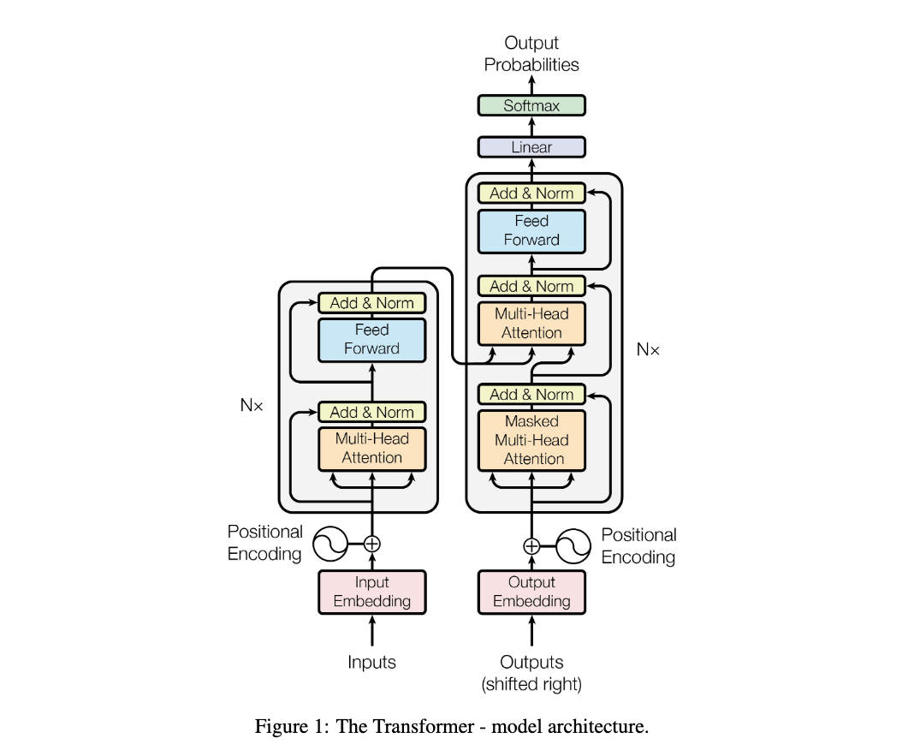
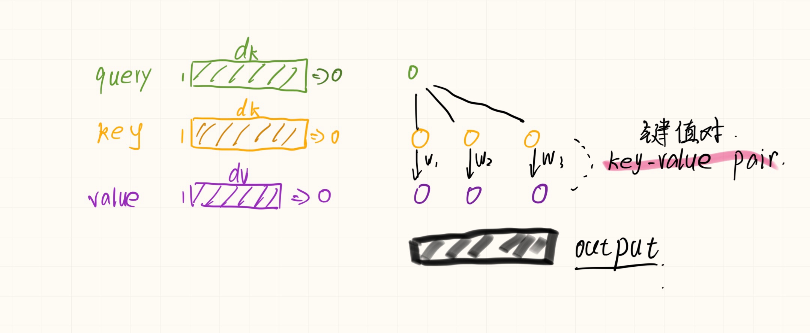
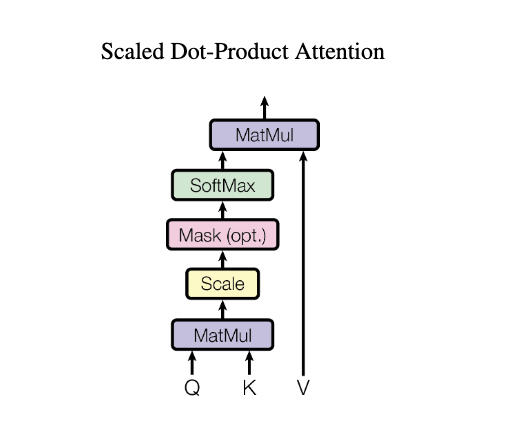
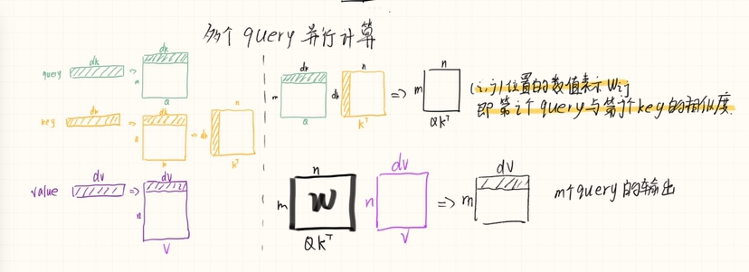
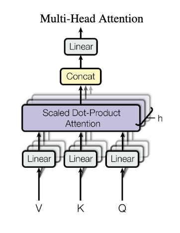
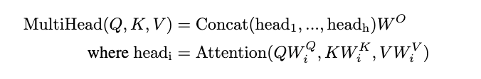

Transformer
Abstract
主要的序列转导模型基于复杂的循环或卷积神经网络，包括编码器和解码器。
性能最好的模型还通过注意力机制连接编码器和解码器。
我们提出了一种新的简单网络架构 Transformer
它完全基于注意力机制，完全摒弃了递归和卷积
对两个机器翻译任务的实验表明，这些模型在质量上更优越，同时更可并行化，并且需要的训练时间显着减少。
- 我们的模型在 WMT 2014 英德翻译任务上达到了 28.4 BLEU，比现有的最佳结果（包括合奏）提高了 2 BLEU 以上。
- 在 WMT 2014 英语到法语翻译任务中，我们的模型在 8 个 GPU 上训练 3.5 天后，建立了一个新的单模型 state-of-the-art BLEU 得分 41.0，这是最好的训练成本的一小部分 文献中的模型。
1.Introduction
循环神经网络(RNN)、长短期记忆(LSTM)和门控循环神经网络，尤其是在语言建模和机器翻译等序列建模和转导问题已被牢固确立为最先进的方法此后，许多努力继续推动循环语言模型和编码器-解码器架构的界限
循环模型通常沿输入和输出序列的符号位置考虑计算。
将位置与计算时间的步骤对齐，它们生成一系列隐藏状态 ht，作为先前隐藏状态 ht-1 和位置 t 的输入的函数。
这种固有的顺序性质排除了训练示例中的并行化，这在更长的序列长度下变得至关重要，因为内存限制限制了示例之间的批处理。
最近的工作通过因式分解技巧 和条件计算 显着提高了计算效率，同时在后者的情况下也提高了模型性能。
然而，顺序计算的基本约束仍然存在。
注意机制已成为各种任务中引人注目的序列建模和转导模型的组成部分，允许对依赖项进行建模，而无需考虑它们在输入或输出序列中的距离
然而，除了少数情况，这种注意力机制与循环网络结合使用。
在这项工作中，我们提出了 Transformer，这是一种避免重复的模型架构，而是完全依赖注意力机制来绘制输入和输出之间的全局依赖关系
在八个 P100 GPU 上经过短短 12 小时的训练后，Transformer 可以实现更多的并行化，并且可以在翻译质量方面达到新的水平
2.Background
减少顺序计算的目标也构成了扩展神经 GPU 、ByteNet 和 ConvS2S 的基础，所有这些都使用卷积神经网络作为基本构建块，并行计算所有输入的隐藏表示和 输出位置。
在这些模型中，关联来自两个任意输入或输出位置的信号所需的操作数量随着位置之间的距离而增长
对于 ConvS2S 呈线性增长，而对于 ByteNet 则呈对数增长。
这使得学习远距离位置之间的依赖关系变得更加困难
在 Transformer 中，这被减少到恒定数量的操作，尽管由于平均注意力加权位置而降低了有效分辨率，我们使用多头注意力(Multi-Head Attention)来抵消这种影响
自注意力(Self-attention)，有时称为内部注意力，是一种将单个序列的不同位置关联起来以计算序列表示的注意力机制
自注意力已成功用于各种任务，包括阅读理解、抽象摘要、文本蕴涵和学习任务无关的句子表示
端到端记忆网络(End-to-end memory network)基于循环注意机制而不是序列对齐循环，并且已被证明在简单语言问答和语言建模任务中表现良好
然而，据我们所知
Transformer 是第一个完全依赖自注意力来计算其输入和输出表示而不使用序列对齐 RNN 或卷积的转换模型
在接下来的部分中，我们将描述 Transformer，激发自注意力并讨论其相对于其他模型的优势
3.Model Architecture
大多数竞争性神经序列转导模型具有编码器-解码器结构
编码器将符号表示的输入序列 (x1, ..., xn) 映射到连续表示的序列 z = (z1, ..., zn)
其中z1是一个向量 用一个向量来表示x1
给定 z，解码器然后一次生成一个元素的符号输出序列 (y1, ..., ym)
在每个步骤中，模型都是自回归(auto-regressive)的,在生成下一个时将先前生成的符号用作附加输入
Transformer 遵循这种整体架构，对编码器和解码器使用堆叠的自注意力(self-attention)和point-wise
编码器和解码器的全连接层，分别如图 1 的左半部分和右半部分所示

3.1Encoder and Decoder Stacks
3.1.1Encoder
编码器由 N = 6 个相同的层组成 , 每层有两个子层
第一个子层是 多头自注意力机制(multi-head self-attention mechanism)
第二个子层是simple, position-wise fully connected feed-forward network.（说简单点就是MLP）
我们在两个子层中的每一个周围使用残差连接，然后进行层归一化
即每个子层的输出为LayerNorm(x + Sublayer(x))
其中Sublayer(x)是子层自己实现的函数
为了促进这些残差连接，模型中的所有子层以及嵌入层都会产生维度 dmodel = 512 的输出
LayerNorm的细节可以参考下面链接
https://blog.csdn.net/jump882/article/details/119795466
3.1.1Decoder
解码器也由一堆 N = 6 个相同的层组成。
除了每个编码器层中的两个子层之外，解码器还插入了第三个子层
该子层对编码器堆栈的输出执行多头注意力（multi-head attention）
与编码器类似，我们在每个子层周围使用残差连接，然后进行层归一化
我们还修改了解码器堆栈中的自注意力子层，以防止位置关注后续位置
这种掩蔽与输出嵌入偏移一个位置的事实相结合，确保对位置 i 的预测只能依赖于位置小于 i 的已知输出
3.2Attention
注意力函数可以描述为将a query(查询)和一组key-value键值对映射到输出
其中查询query、键key、值value和输出都是向量
输出可以理解为计算值value的加权和所得
其中分配给每个value的权重weight由查询query与相应键key的相似度函数计算
下面给了一张参考图

3.2.1 Scaled Dot-Product Attention

我们将我们的particular attention称为“Scaled Dot-Product Attention”
输入由维度 dk 的query和key以及维度 dv 的value组成
我们计算的query和所有keys的点积，将每个key除以 \(\sqrt{d_k}\)，然后应用 softmax 函数来获得value的权重
在实践中，我们同时计算一组querys的注意力函数，并打包到矩阵 Q 中
key和value也打包到矩阵 K 和 V 中
我们将输出矩阵计算为： \[ Attention(Q,K,V) = softmax(\frac{QK^T}{\sqrt{d_k}})V \] 下面给了一张参考图 当m=1时就跟单独运算一样

两个最常用的注意功能是
加性注意 （additive attention ）
点积（乘法）注意（dot-product (multiplicative) attention）
点积注意力与我们的算法相同，除了 \(\sqrt{d_k}\) 的比例因子
Additive attention使用具有单个隐藏层的前馈网络计算兼容性函数
虽然两者在理论上的复杂性相似，但点积注意力在实践中更快且更节省空间，因为它可以使用高度优化的矩阵乘法代码来实现
虽然对于较小的 dk 值，这两种机制的性能相似，但加法注意力优于点积注意力，而无需对较大的 dk 值进行缩放
我们怀疑对于较大的 dk 值，点积的幅度会变大，从而将 softmax 函数推入具有极小梯度的区域
为了抵消这种影响，我们将点积缩放\(\sqrt{d_k}\)
注意Mask部分 具体操作就是将qt之后的值给换成一个非常大的负数，在后续的softmax时候就会变成0
使得计算结果只用到了v1到vt-1的结果
3.2.2 Multi-Head Attention

与使用 dmodel维度的key、value和query执行单个注意函数不同
我们发现将查询、键和值分别线性投影到 dk、dk 和 dv 维度上的不同学习线性投影是有益的（投影到低维度）
相当于给h次机会 希望能够学到不一样的投影的方式
使得在投影进去的度量空间里面 能够去匹配不同模式的相似函数
类似卷积神经网络中有多个输出通道的感觉
然后，在每个查询、键和值的投影版本上，我们并行执行 Scaled Dot-Product Attention，产生 dv 维输出值。
这些被连接cat起来并再次投影，产生最终值
Multi-Head Attention允许模型共同关注来自不同位置的不同表示子空间的信息
对于单个注意力头，平均化会抑制这一点

Q 矩阵从[m,dmodel] 降维到[m , dk] 那么\(W_i^Q \in \mathbb{R}^{d_{model}\times d_k}\)
K 矩阵从[n,dmodel] 降维到[n , dk] 那么\(W_i^K \in \mathbb{R}^{d_{model}\times d_k}\)
V 矩阵从[n,dmodel] 降维到[n , dv] 那么\(W_i^V \in \mathbb{R}^{d_{model}\times d_v}\)
在这项工作中，我们使用 h = 8 个并行注意力层或头
对于其中的每一个，我们使用 dk = dv = dmodel/h = 64
由于每个头的维度减少，总计算成本类似于具有全维度的单头注意力
3.2.3 Applications of Attention in our Model
Transformer 以三种不同的方式使用多头注意力：
- 在“编码器-解码器注意力”层中，query来自前一个解码器层，记忆key和value来自编码器的输出。 这允许解码器中的每个位置参与输入序列中的所有位置。 这模仿了序列到序列模型中典型的编码器-解码器注意机制
- 编码器包含自注意力层 在自注意力层中，所有的键、值和查询都来自同一个地方，在这种情况下，是编码器中前一层的输出。 编码器中的每个位置都可以关注编码器上一层中的所有位置。
- 类似地，解码器中的自注意力层允许解码器中的每个位置关注解码器中直到并包括该位置的所有位置。 我们需要防止解码器中的信息向左流动，以保持自回归特性。 我们通过屏蔽掉（设置为 -∞）softmax 输入中与非法连接相对应的所有值来实现缩放点积注意力的内部
3.3Position-wise Feed-Forward Networks
除了注意力子层之外，我们的编码器和解码器中的每一层都包含一个完全连接的前馈网络，该网络分别且相同地应用于每个位置。 这包括两个线性变换，中间有一个 ReLU 激活。 \[ FFN(x) = max(0,xW_1 + b_1 )W_2 + b_2 \]
输入层 - 隐藏层 - 输出层
输入( n , dmodel = 512 )
隐藏层( n , dmodel*4 = 2048)
输出层（n ， dmodel = 512）
虽然线性变换在不同位置上是相同的，但它们在层与层之间使用不同的参数。 另
一种描述方式是内核大小为 1 的两个卷积
输入和输出的维度为 dmodel = 512，内层的维度为 dff = 2048
3.4 Embeddings and Softmax
与其他序列转导模型类似，我们使用learned embedding将输入标记和输出标记转换为维度 dmodel 的向量
我们还使用通常的学习线性变换和 softmax 函数将解码器输出转换为预测的下一个token概率
在我们的模型中，我们在两个embedding和 pre-softmax 线性变换之间共享相同的权重矩阵
在embedding中，我们将这些权重乘以 \(\sqrt{d_{model}}\)
3.5 Positional Encoding
由于我们的模型不包含递归和卷积，为了让模型利用序列的顺序，我们必须注入一些关于标记在序列中的相对或绝对位置的信息
为此，我们在输入嵌入编码器和解码器堆栈的底部中添加“位置编码”
位置编码与嵌入具有相同的维度 dmodel，因此可以将两者相加
位置编码有很多选择，学习的和固定的
在这项工作中，我们使用不同频率的正弦和余弦函数： \[ PE(pos,2i) = sin(pos/1000^{2i/d_{model}}) \]
\[ PE(pos,2i+1) = cos(pos/1000^{2i/d_{model}}) \]
- pos 是位置
- i 是维度
也就是说，位置编码的每个维度对应一个正弦曲线。
波长形成从 2π 到 10000 · 2π 的几何级数
我们选择这个函数是因为我们假设它可以让模型轻松学习通过相对位置来参与，因为对于任何固定的偏移量 k
\(PE_{pos+k}\)可以表示为 \(PE_{pos}\) 的线性函数
我们还尝试使用学习的位置嵌入 , 发现这两个版本产生了几乎相同的结果
我们选择了正弦版本，因为它可以让模型推断出比训练期间遇到的序列长度更长的序列长度